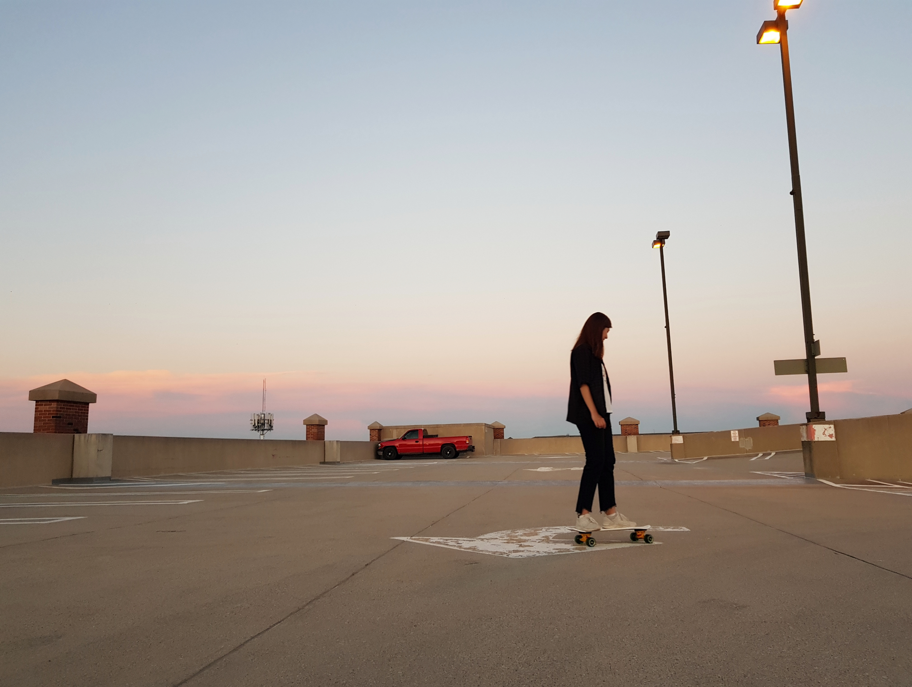
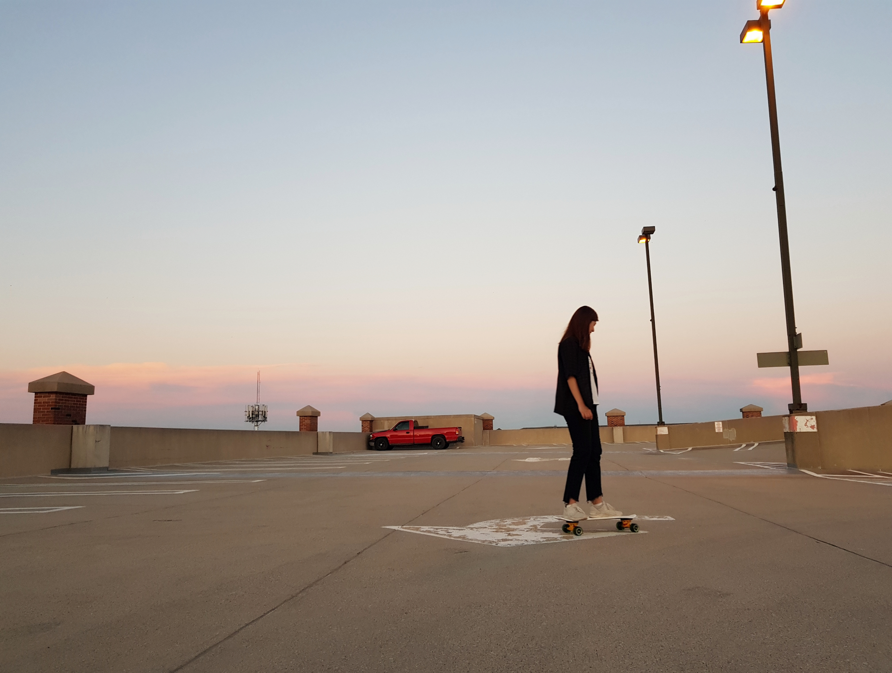

유럽
2015년 여름, 학교의 지원을 받아 첫 번째 유럽여행을 다녀왔다. 영국 런던, 프랑스 파리, 독일 뮌헨의 세 도시를 여행하였다.
2018년 여름, 독일 베를린에서 인턴십을 하게된 관계로 한달동안 거주하였다. 독일 베를린, 뮌헨, 라이프치히, 할레, 함부르크, 오스트리아 잘츠부르크, 도른비른, 체코 프라하, 포루투갈 리스본 등의 여러 도시를 여행하였다.
미국
 
2016년 겨울, 학교의 지원을 받아 첫 번째 미국여행을 다녀왔다. 미국 서부여행으로 실리콘밸리를 탐방하였다. 또한 캘리포니아의 유니버셜스튜디오, 디즈니랜드를 다녀왔다.
2017년 하반기, 미국 퍼듀대학교로 프로젝트를 하러 떠나 한 학기간 거주하였다. 퍼듀대학교가 위치한 인디애나 주의 웨스트라파엣에서 살았다. 라스베가스, 뉴욕으로 여행을 다녀왔다.
우즈베키스탄
2017년 여름, 해외봉사활동의 일원으로 우즈베키스탄의 수도 타슈켄트에 다녀왔다. 튜린공과대학교에서 봉사활동을 진행하였고, IT담당으로 대학생들을 대상으로 데이터베이스를 가르쳐주었다.